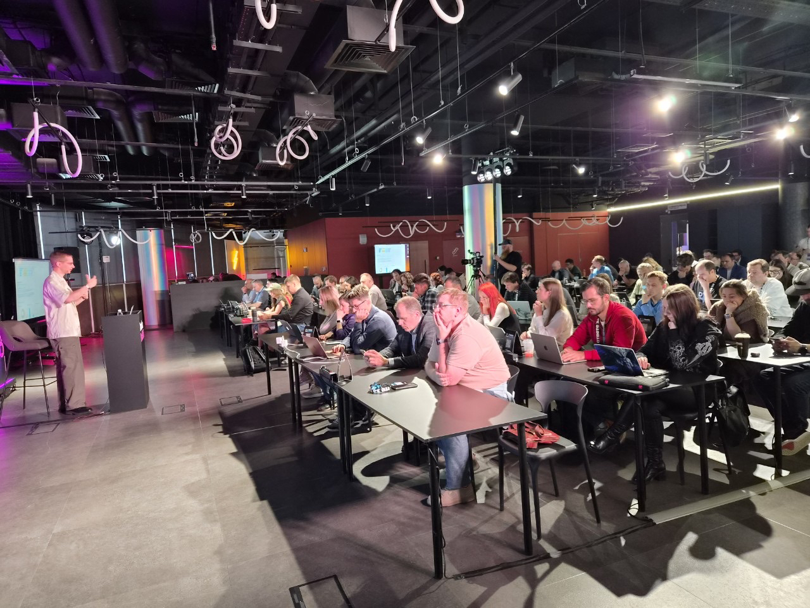
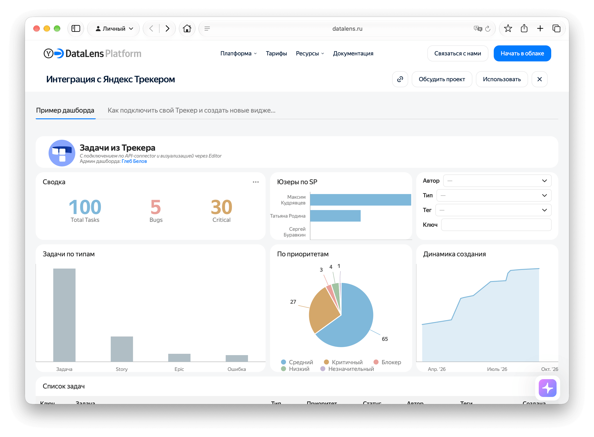
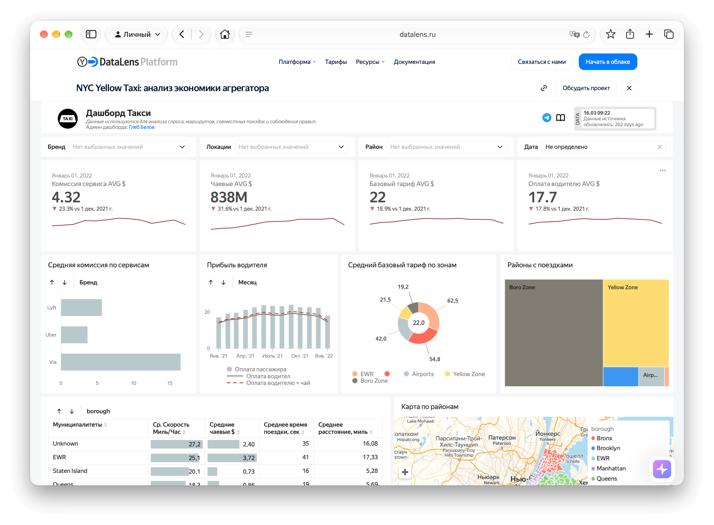

Gleb Belov | Projects
A selection of BI projects I've built across different tools and domains.
NDA data removed or faked · back to CV
Aha 2026 — AI in BI talk
Spoke at Aha 2026 about AI in BI tools, showcasing DataLens's AI assistant for data analysis. Watch recording.
Scale 2026 workshop
Led a hands-on workshop at Scale 2026, showing DataLens's built-in AI capabilities and how to work effectively with the platform using external AI agents and the SDK. Get the dashboard to repeat the workshop in your own instance.

Neuro Scale Kazakhstan — DataLens talk
Presented Yandex DataLens at Neuro Scale Kazakhstan, covering the platform's core features and the new AI-powered assistant that lets users build charts and explore data in natural language. Also covered in a bluescreen.kz article.

Skolkovo Business School — Guest Lecturer
Teaching data analytics and BI to senior executives as part of the Business Management with AI and Data programme at Skolkovo Moscow School of Management.

DataLens Festival 2025 — Speaker
Spoke at the DataLens Festival 2025 on the On-premises day, covering best practices and architecture for administrators. Also recorded two videos: Export & Import feature and New DataLens capabilities.

DataLens On-Premises — Admin course & Cookbook
Created a paid course for DevOps, SREs and system administrators on deploying and managing DataLens On-Premises: architecture, authorization, monitoring, backups and database connectivity. Also available as a B2B intensive via Yandex Cloud. Free version — a Cookbook with articles covering the same topics.


Embedded Analytics in DataLens — Webinar
Hosted a webinar on embedding DataLens dashboards into external services — corporate portals, client dashboards and partner interfaces. Covered use cases, security mechanics and a real-world case from Yandex Tickets. Watch recording.

Yandex Tracker — DataLens Integration
Built a task analytics dashboard showing how DataLens integrates with Yandex Tracker using Public API, API Connector and custom charts in Editor. It also serves as context for LLMs to generate new visualizations. Explore or deploy from the gallery.

NYC Yellow Taxi — Taxi Economics Dashboard
Built a taxi economics dashboard for an enterprise pilot using DataLens On-Premises and ClickHouse. Combines service commissions and driver earnings metrics, district-level maps and hierarchical tables. Explore the dashboard.
Challenges: Combining BI development with data engineering to support interactive analytics on hundreds of millions of taxi records.

E-com Rangers mysterious profits
You can use this dashboard to check your business analysis skills: explore data, use filters, and try to answer the questions.

Cross-Service Usage DataLens Dashboard
Showed how different units within the company interact with each other, helping identify dependencies and improve resource allocation.
Challenges: Integrating data from multiple sources with different formats and keeping metrics consistent across units.

Topline Plan-Fact GMV DataLens Dashboard
Enabled real-time tracking of Gross Merchandise Value (GMV) against planned targets, helping the business monitor performance and adjust strategies.
Challenges: Visualizing plan-fact variances so they are easy to act on, making key metrics stand out while keeping a clean design.

CSI of Merchants Tableau Dashboard
Analyzed and visualized merchant performance on the marketplace, helping identify trends and underperforming merchants.
Challenges: Dealing with incomplete merchant data and creating intuitive visualizations for non-technical stakeholders.

Map Cross-Filtering Tableau Example
An example of using map charts to filter bar charts dynamically, making data exploration more interactive.

Superset Cheat Sheet
Created a cheat sheet to help analytics teams and other users quickly understand how BI tools work, reducing onboarding time.


Automated Dashboard Delivery via Telegram
Built a Python-based service that sends Tableau or DataLens dashboard images to users on a schedule or when specific metric alerts are triggered, serving 500+ daily active users.
Challenges: Reliable delivery of compressed but high-quality images, handling API rate limits, and scaling the service as user base grew.

TSUM Finance Overview PowerBI Dashboard
A topline financial overview of TSUM's main units, giving executives a clear view of performance across the business.
Challenges: Consolidating financial data from different systems and ensuring data security while keeping reports useful for executives.